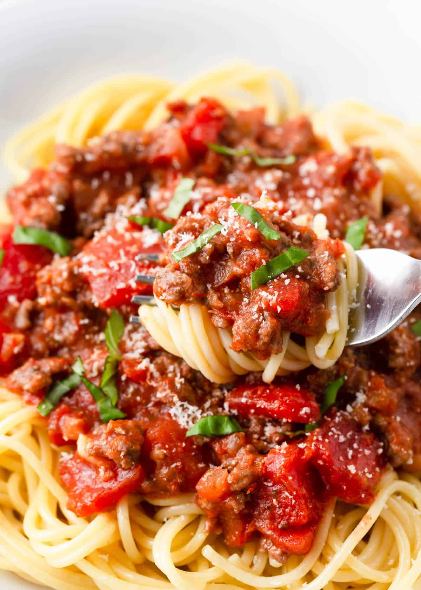

Spaghetti

Description
Spaghetti is a long, thin, solid, cylindrical pasta. It is a staple food of traditional Italian cuisine. Like other pasta, spaghetti is made of milled wheat, water, and sometimes enriched with vitamins and minerals. Italian spaghetti is typically made from durum-wheat semolina.
Originally, spaghetti was notably long, but shorter lengths gained in popularity during the latter half of the 20th century and now it is most commonly available in 25 to 30 cm (10 to 12 in) lengths. A variety of pasta dishes are based on it and it is frequently served with tomato sauce, meat or vegetables.
Ingredients
- 1 pound lean ground beef
- 2.5 cups chopped tomatoes
- 1 1/3 cans tomato paste
- 1 can sliced mushrooms
- 2 tablespoons dried minced onion
- 1 teaspoon salt
- 1 teaspoonm dried oragano
- 3/4 teaspoon white sugar
- 1/4 teaspoon ground black pepper
- 1/8 teaspoon garlic powder
- 12 ounces spaghetti
Directions
- Heat a large skillet over medium-high heat. Cook and stir ground beef in the hot skillet until browned and crumbly, 5 to 7 minutes. Drain and discard grease.
- Transfer beef into a large pot over low heat; stir in tomatoes, tomato paste, mushrooms, onion, salt, oregano, sugar, pepper, and garlic powder. Cover and simmer, stirring occasionally, for 2 hours.
- Bring a large pot of lightly salted water to a boil. Cook spaghetti in the boiling water, stirring occasionally, until tender yet firm to the bite, about 12 minutes; drain. Serve meat sauce over spaghetti.